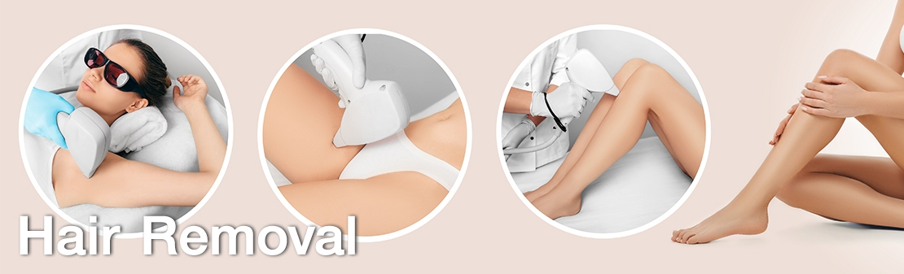

Depilación

🔹 1. Tipos de Depilación
✨ Depilación Temporal
Son métodos que eliminan el vello superficialmente o desde la raíz, pero este vuelve a crecer con el tiempo.
🪒 Afeitado (Rasurado)
- Uso de rastrillo o máquina de afeitar.
- Duración: 1-3 días.
- Ventajas: Rápido, económico e indoloro.
- Desventajas: Puede causar irritación, cortes y crecimiento de vello más grueso o enquistado.
- Consejo: Usa crema de afeitar y rasura en dirección del crecimiento del vello para evitar irritación.
🧴 Cremas Depilatorias
- Aplicación de una crema que disuelve el vello químicamente.
- Duración: 3-7 días.
- Ventajas: Indoloro y fácil de usar.
- Desventajas: Puede causar alergias o irritación. No recomendado para piel sensible.
- Consejo: Realiza una prueba en una pequeña área antes de aplicarla en toda la zona.
🔥 Depilación con Cera
- Se aplica cera caliente o fría sobre la piel y se retira con tiras o directamente.
- Duración: 2-4 semanas.
- Ventajas: Arranca el vello de raíz, lo debilita con el tiempo y deja la piel suave.
- Desventajas: Doloroso, puede causar irritación o foliculitis.
- Consejo: Exfolia antes de depilarte para evitar vellos encarnados. No uses en piel con heridas o quemaduras.
✂️ Depilación con Pinzas
- Se extrae el vello uno por uno con pinzas.
- Duración: 3-4 semanas.
- Ventajas: Precisión en áreas pequeñas como cejas y rostro.
- Desventajas: Doloroso y tardado en áreas grandes.
⚡ Depiladora Eléctrica
- Aparato que arranca el vello de raíz con pequeños discos giratorios.
- Duración: 3-4 semanas.
- Ventajas: Resultados duraderos y vello más delgado con el tiempo.
- Desventajas: Puede ser doloroso, causar enrojecimiento o vellos encarnados.
- Consejo: Úsala con la piel seca y exfoliada para evitar que el vello se atasque.
🔥 Depilación Permanente o de Larga Duración
Estos métodos buscan eliminar el vello de forma definitiva o reducir su crecimiento considerablemente.
☀️ Láser
- Emite un haz de luz que destruye el folículo piloso.
- Duración: Puede reducir el vello en un 80-90% después de varias sesiones.
- Ventajas: Resultados prolongados, el vello se debilita y deja la piel suave.
- Desventajas: Puede ser costoso, requiere varias sesiones y funciona mejor en piel clara con vello oscuro.
- Consejo: Evita la exposición al sol antes y después del tratamiento.
⚡ Luz Pulsada Intensa (IPL)
- Similar al láser, pero con pulsos de luz en diferentes longitudes de onda.
- Duración: Reduce el vello gradualmente después de varias sesiones.
- Ventajas: Puede usarse en casa con dispositivos portátiles.
- Desventajas: No es tan potente como el láser, puede tardar más en ver resultados.
- Consejo: Usa gafas protectoras y sigue las instrucciones del dispositivo para evitar quemaduras.
💉 Electrólisis
- Se introduce una aguja fina en el folículo piloso y se aplica corriente eléctrica para destruirlo.
- Duración: Permanente después de varias sesiones.
- Ventajas: Funciona en todos los tipos de vello y piel.
- Desventajas: Es un procedimiento lento, doloroso y costoso.
- Consejo: Busca un profesional experimentado para evitar cicatrices.
🔹 2. Consejos para una Depilación Exitosa
✅ Antes de la Depilación
- Exfolia la piel un día antes para evitar vellos encarnados.
- Evita tomar el sol antes de depilarte para prevenir irritación.
- Usa productos hidratantes para mantener la piel suave.
✅ Después de la Depilación
- Aplica gel de aloe vera o crema calmante para reducir la irritación.
- Evita exponerte al sol, saunas o piscinas en las siguientes 24 horas.
- Usa ropa suelta para evitar roces e irritación.
✅ Prevención de Vellos Encarnados
- Exfolia la piel dos veces por semana.
- Hidrata la piel diariamente para mantenerla suave.
- Evita depilarte en seco o sin productos adecuados.
🔹 3. ¿Cuál Método es el Mejor para Ti?
🔸 Si buscas rapidez y comodidad: ✅ Rasurado o cremas depilatorias.
🔸 Si quieres resultados duraderos sin compromiso permanente: ✅ Cera o depiladora eléctrica.
🔸 Si deseas eliminar el vello definitivamente: ✅ Láser, IPL o electrólisis.